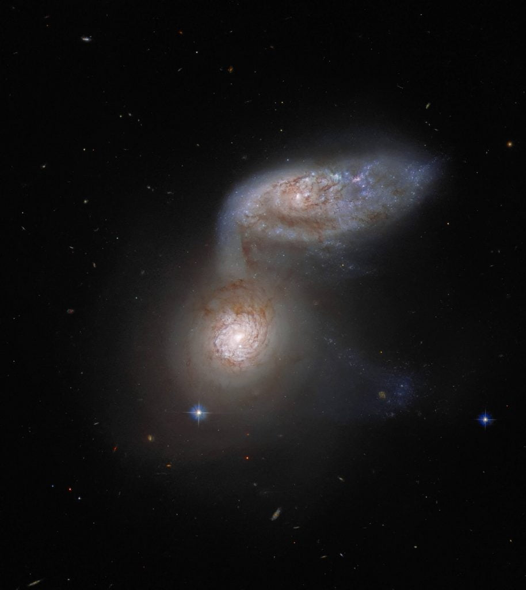

အခု ဂလက်ဆီ နှစ်ခုကို ပေါင်းပြီး Arp 91 လို့ အမည်ပေးထားပါတယ်။ အခုဂလက်ဆီ နှစ်ခုဟာ ကမ္ဘာက အလင်းနှစ် သန်း ၁၀၀ လောက် ဝေးတဲ့ နေရာမှာ တိုက်မိကြတာပါ။ အလင်းနှစ် သန်း ၁၀၀ ဆိုတာက အဲ့သည် ဂလက်ဆီ နှစ်ခုက လာတဲ့ အလင်း ကမ္ဘာကို ရောက်ဖို့ အချိန် နှစ်ပေါင်း သန်း ၁၀၀ ကြာမယ်လို့ ဆိုလိုတာ ဖြစ်ပါတယ်။ တနည်းအားဖြင့်တော့ အခု ဖြစ်စဉ်ဟာ လွန်ခဲ့တဲ့ နှစ်သန်း ၁၀၀ လောက်က ဖြစ်ပွားခဲ့တဲ့ တိုက်မိမှုကြီး ဖြစ်ပါတယ်။
ဒီ ဂလက်ဆီ နှစ်ခုပေါင်းကို Arp-91 လို့ အမည်ပေးထားပေမယ့် ဒီဂလက်ဆီ တွေမှာ ကိုယ်ပိုင်နာမည်တွေ ရှိကြပါတယ်။ အောက်က ဂလက်ဆီ အသေးလေးရဲ့ အမည်က NGC 5953 ဖြစ်ပြီး အပေါ်က ဘဲဥပုံ ဂလက်ဆီကြီးရဲ့ အမည်ကတော့ NGC 5954 လို့ ခေါ်ပါတယ်။

အခု ဂလက်ဆီ နှစ်ခုတိုက်မိတဲ့ ပုံဟာ စကြာဝဠာ အတွင်းမှာ ရှိနေကြတဲ့ ဂလက်ဆီတွေ အချင်းချင်းကြားက အချင်းချင်း သက်ရောက်မှုတွေရဲ့ နမူနာ တစ်ခုပဲ ဖြစ်ပါတယ်။ ဒီပုံမှာ မသိရင်တော့ အပေါ်က ဂလက်ဆီကြီးက အောက်က ဂလက်ဆီလေးကို ဝါးမြိုနေသလိုများ ထင်စရာ ရှိပါတယ်။ ဒါပေမယ့် သေချာကြည့်ရင် တကယ်က အောက်က ဂလက်ဆီ ကလေးက အပေါ်က ဂလက်ဆီ ကြီးဆီက ကြယ်တွေနဲ့ ဓါတ်ငွေ့တွေကို ဆွဲငင်ဝါးမြို ပစ်နေတယ် ဆိုတာကို တွေ့ကြရမှာ ဖြစ်ပါတယ်။ အပေါ်က ဂလက်ဆီက လက်တံတစ်ခုက အောက်က ဂလက်ဆီထဲကို ဝင်နေပြီး အဲ့သည် လက်တံတလျှောက် ကြယ်တွေ၊ ဓါတ်ငွေ့တွေက အောက်က ဂလက်ဆီဆီကို ရွှေ့လျှား စီးဝင် သွားနေတာ ဖြစ်ပါတယ်။
အခုလို ဖြစ်ရတဲ့ အဓိက အကြောင်းရင်းကတော့ ဒီဂလက်ဆီ နှစ်ခုမှာ ရှိနေတဲ့ ကြယ်တွေ၊ ဓါတ်ငွေ့တိမ်တိုက်တွေနဲ့ မမြင်ရတဲ့ Dark Matter အမှောင်ဒြပ်တွေရဲ့ ပြင်းထန်တဲ့ ဆွဲငင်အား (Gravity) ကြောင့်ပဲ ဖြစ်ပါတယ်။ ဒီလို ဂလက်ဆီတွေ တိုက်မိတာ၊ အချင်းချင်း ဝါးမြိုပစ်တာဟာ တကယ်ကတော့ သိပ်ပြီး ထူးဆန်းတဲ့ ကိစ္စ မဟုတ်ပါဘူး။ ဒါဟာ စကြာဝဠာထဲမှာ ပုံမှန် ဖြစ်ရိုးဖြစ်စဉ် ဖြစ်နေကျ သဘောသဘာဝ တစ်ခုသာ ဖြစ်ပါတယ်။
သိပ္ပံပညာရှင် အများစုက ဒီလို ဂလက်ဆီ နှစ်ခု တိုက်မိတဲ့ အခါ ဖြစ်လာတဲ့ ဂလက်ဆီဟာ Elliptical Galaxy လို့ခေါ်တဲ့ ဘဲဥပုံ ဂလက်ဆီ ဖြစ်လာမယ်လို့ ယူဆကြပါတယ်။
အခုလို ဂလက်ဆီကြီးတွေ တိုက်မိတဲ့ ဖြစ်ရပ်တွေက ခနတဖြုတ်နဲ့ ပြီးသွားတာတော့ မဟုတ်ပါဘူး။ ဒီလို ဂလက်ဆီတွေ တိုက်မိတဲ့ ဖြစ်စဉ်တွေရဲ့ ကြာချိန်က အချိန်ကာလအားဖြင့် နှစ် သန်းရာချီ ကြာမြင့်တတ်ပါတယ်။ အဲ့သည်တော့ အခု ဒီဂလက်ဆီ နှစ်ခုရဲ့ ဓါတ်ပုံကို နောက် နှစ် ၁၀၀ လောက်မှာ ထပ်ရိုက်မယ် ဆိုရင်လဲ အခု မြင်ရတာနဲ့ ဘာမှ သိပ်ပြီး ထူးထူးခြားခြား ပြောင်းလဲမှုမျိုး မြင်ရလိမ့်မယ် မဟုတ်ဘူးလို့ နာဆာက ပြောပါတယ်။
မှတ်ချက်။ ကျွန်တော်တို့ရဲ့ မစ်ကီးဝေး ဂလက်ဆီ ကြီးကလဲ ကျွန်တော်တို့ရဲ့ အိမ်နီးချင်း အင်ဒရိုမီဒါ ဂလက်ဆီ (Andromeda Galaxy) နဲ့ အနာဂါတ်မှာ တိုက်မိကြမယ်လို့ ဆိုပါတယ်။ ဒါပေမယ့် ဒီလို တိုက်မိဖို့က နောက် လာမယ့် နှစ် သန်း ၄၀၀၀-၅၀၀၀ လောက် ကြာမှ ဖြစ်လာမှာပါတဲ့။